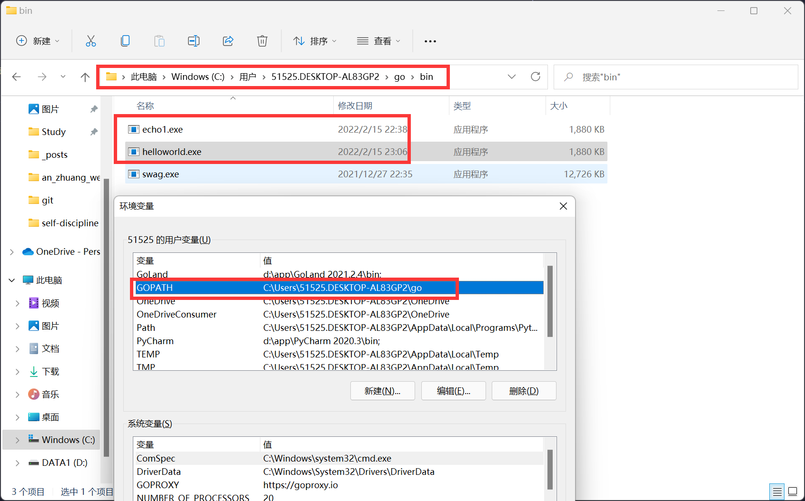
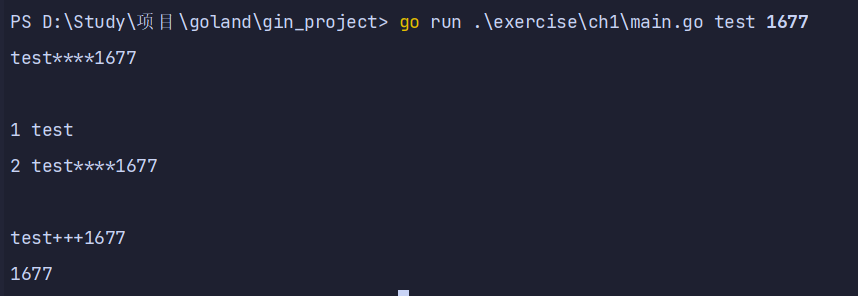

命令行参数
1.编译
go build hello.go
2.go get gopl.io/ch1/helloworld命令，就会从网上获取代码，并放到对应目录中
下载的可执行程序会放在$GOPATH/bin/helloworld目录

3.Go语言不需要在语句或者声明的末尾添加分号，除非一行上有多条语句。
4.Go语言在代码格式上采取了很强硬的态度。gofmt工具把代码格式化为标准格式
gofmt -w hello.go重写回源文件
5.goimports，可以根据代码需要,自动地添加或删除import声明
go get golang.org/x/tools/cmd/goimports （被墙不能用）
命令行参数：
1.os包以跨平台的方式，提供了一些与操作系统交互的函数和变量。程序的命令行参数可从os包的Args变量获取；os包外部使用os.Args访问该变量。
2.切片是Go语言的基础概念，现在先把切片s当作数组元素序列,序列的长度动态变化,用s[i]访问单个元素，用s[m:n]获取子序列，序列的元素数目为len(s)
a = [1, 2, 3, 4, 5], a[0:3] = [1, 2, 3]
3.os.Args的第一个元素，os.Args[0],是命令本身的名字，其他参数是os.Args[1:len(os.Args)] => os.Args[1:]
4.import导入两个包，括号括起来
5.Go语言只有for循环这一种循环语句
for initialization; condition; post {
}
for condition {
}
for {//无限循环
}
6.for循环的另一种形式,在某种数据类型的区间（range）上遍历，如字符串或切片。
循环迭代，range产生一对值；索引以及在该索引处的元素值。
_空标识符丢弃索引，arg是索引所对应的值
7.使用strings包的Join函数
package main
import (
"fmt"
"os"
"strings"
)
/*
练习 1.1 修改 echo 程序输出 os.Args[0] ,即命令的名字
练习 1.2 修改 echo 输出参数的索引和值，每行一个
练习1.3：尝试测量可能低效的程序和使用 strings.Join 的程序在执行时间上的差昇
（1.6节有time 包，11.4 节展示如何撰写系统性的性能评估测试。
*/
// 练习 1.1
func test1() {
var s, sep string
for _, arg := range os.Args[1:] {
s += sep + arg
sep = "****"
}
fmt.Println(s)
}
//练习 1.2
func test2() {
var s, sep string
for i := 1; i < len(os.Args); i++ {
s += sep + os.Args[i]
sep = "****"
fmt.Println(i, s)
}
}
//练习1.3
func test3() {
for i := 1; i < len(os.Args); i++ {
fmt.Println(strings.Join(os.Args[i:], "+++"))
}
}
func main() {
test1()
fmt.Println()
test2()
fmt.Println()
test3()
}
8.只是为了调试可以直接打印
